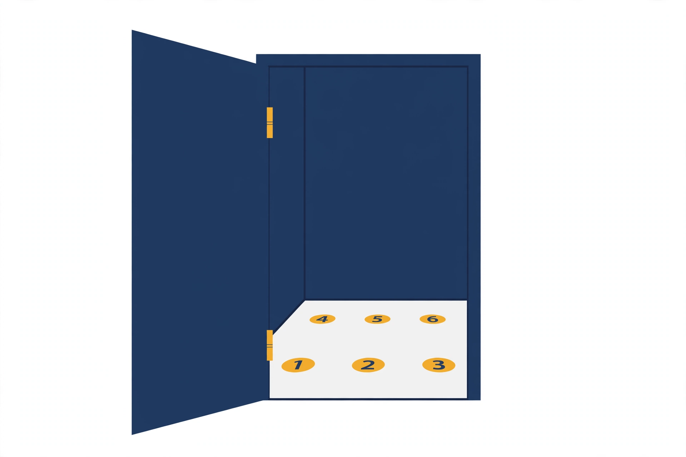

Live needs a passcode. Try Load demo.
Backend ready.
S1 Routes home (ready)
Your routes
Walk a route once, learn it for good, then use it to remember what matters.
Morning walk to the station
Daily 6 stations
Learned 4/6 stations
List: Biology exam, chapter 3
Open
Grandma's house
Occasional 8 stations
Learned 8/8 stations
List: Wedding toast
Open
Park loop
Daily 3 stations
Learned 0/3 stations
No list yet
Unfinished walk
Open

No routes yet
New walk
Load demo
Live settings
Live passcode (not needed for Load demo)
S1 Routes home (empty)
Your routes
Walk a route once, learn it for good, then use it to remember what matters.
No routes yet
New walk
Load demo
S2 Walking: capture (uploading)
S3 Station card (baseline shown)
Station 2
SAM 3.1
No location for this station, so no street photo.
Mapillary
Not your walk
Recorded
Photo: jdoe / Mapillary, CC BY-SA
View on Mapillary
What is here Muse Spark
Landmark Bakery with a striped awning
Colours Cream, red, brass
Detail A chalkboard with today's loaves
Quick taps
Sound
Traffic
Chatter
Birds
Quiet
Smell
Bread
Coffee
Rain
Feel
Warm
Breezy
Cool
Mood
Calm
Cheerful
Busy
Turn after
Left
Right
Straight
Save station
Drop station
Drop it
Keep
Undo
Corner bakery
S3 Station card (name clash error)
Station 3
Save station
Drop station
Drop it
Keep
S4 Finish walk (error)
S5 Route view (ready)
Morning walk to the station Daily
No stations yet. Start a new walk to add some.
1 2 3 4 5 6
You are here
Said Missed
1
Red front door Right
Traffic Rain Learned 2 Corner bakery Straight
Chatter Bread Learned
Mapillary 3
Fountain square Left
Water Coffee
Practise this route
Show street photos
Mapillary
Place facts (optional)
If your route passes a place with a history or a fun fact, Muse Spark can tie it into each station's cues.
Or type a place
Active list: Biology exam, chapter 3
Add list
This route already holds a list. Retire it first.
Delete route
Delete it
Keep
Undo
S6 List on route (ready)
List on this route
List name
Paste what you want to remember. Muse Spark breaks it into key points and packs them into
a mnemonic or acronym at each station, so one station can hold more than one point.
Find key points
Muse Spark
6 stations, 14 key points
1. Red front door
MRN: "My Red Nose"
Mitochondria make ATP Ribosomes build proteins Nucleus holds DNA
The door belongs to the oldest house on the street, built in 1871.
Muse Spark
Place facts: Wikipedia, CC BY-SA
Visual A glowing red nose on the door knockerAuditory The knocker hums like a power plantKinesthetic You push the heavy door, it buzzesEmotional Pride at 150 years of energyConceptual The house is the cell, the door its gateOlfactory Hot metal and toast Imagined Gustatory A sugar-cube ribosome Imagined Spatial Nucleus sits behind the door, top step
Muse Spark
2. Corner bakery
The cell membrane is a double layer of lipids
Visual Two layers of pastry, sealed at the edgeAuditory A crackle as the crust lets crumbs inOlfactory Butter and warm flour Imagined Gustatory Flaky, salty lipid layer Imagined
Muse Spark
Recorded
3. Fountain square
Packing 3 points into a mnemonic...
4. Bus shelter
Could not reach Muse Spark.
Retry
Make scenes
Muse Image
Retire list
Retire it
Keep
Undo
S7 Scene walk
AI picture
1. Red front door
MRN: My Red Nose
AI picture
2. Corner bakery
The cell membrane is a double layer of lipids
Painting... Muse Image
AI picture
3. Fountain square
Text-only card: the picture failed, the cue still works.
Recorded
Walk your palace
Station 1 of 6
A glowing red nose on the door knocker hums like a power plant.
MRN: mitochondria, ribosomes, nucleus
Previous
Next
S8 Recall (LIVE)
Recall your palace
Walk the route in your head and say each station's item out loud.
1 2 3 4 5 6
You are here
Said Missed
Start recall
Play a recorded session
Done
Speech relay failed
LIVE
Muse Voice Transcribe
Mitochondria make ATP Cell membrane, two layers ...
Matching is plain code, no AI.
S9 Results, history, backup
Rehearsals
History is unavailable right now.
31 Oct, 08:12
Spoken 5/6
Delete
Delete it
Keep 30 Oct, 18:40
Typed 3/6
Delete
Delete it
Keep
Undo
Hit rate per station
Red front door 100% Corner bakery 83% Fountain square 40%
Backup
Download backup
The backup file contains your recall transcripts and place names.
Import a backup